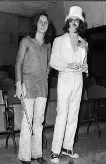

Sui generis
Sui generis es una banda comformada por Carlos Alberto García Moreno y Carlos Alberto Nito Mestre, el duo que tendria un estilo unico como su nombre lo indica, ya que la traduccion al latin de estas palabras significan "de su propio tipo".
Si bien a lo largo de su carrera la banda contó con otros miembros, fue el dúo García/Mestre el que quedó asociado con el nombre, y al que debieron su enorme fama posterior
La banda surgió en 1968 y en este periodo se grabaron sus 3 primeros albumes:vida, confesiones de invierno y pequeñas anecdotas de las instituciones

album "vida"
mejores temas
(a mi opinión)
estacion = https://www.youtube.com/watch?v=K5VWnAH1M6U
cancion para mi muerte = https://www.youtube.com/watch?v=1Zjm0uh8oeA
el tuerto y los ciegos = https://www.youtube.com/watch?v=ZiMurnldYqU
un hada un cisne = https://www.youtube.com/watch?v=Cqx1mg_VVT4&list=RDCqx1mg_VVT4&start_radio=1&rv=Cqx1mg_VVT4&t=4
cuando comenzamos a nacer = https://www.youtube.com/watch?v=f0p-Nq9XJSE&list=RDCqx1mg_VVT4&index=3
la separación del dúo
El dúo decidió separarse a fines de 1975, con una serie de recitales en varias partes del país durante dos semanas, que se iniciaron en el célebre mega-concierto doble en el Luna Park y finalizó en la Patagonia.

nito y charly a sus inicios
nito y charly a dia de hoy
Sinfonías para adolescentes y el breve regreso
cabe mencionar el album "sinfonias para adolecentes", un album el cual reuniria a el dúo denuevo por un breve periodo que abarca desde el 2000 al 2001
uno de los periodos más memorables fue el 7 de diciembre, Sui Generis volvió a presentarse en vivo con un show multitudinario en el Estadio Alberto J. Armando donde se tocaron más de 40 canciones. Participaron como invitados Gustavo Cerati, Fito Páez, León Gieco, Mercedes Sosa y Pedro Aznar.
album "sinfonía para adolecentes"